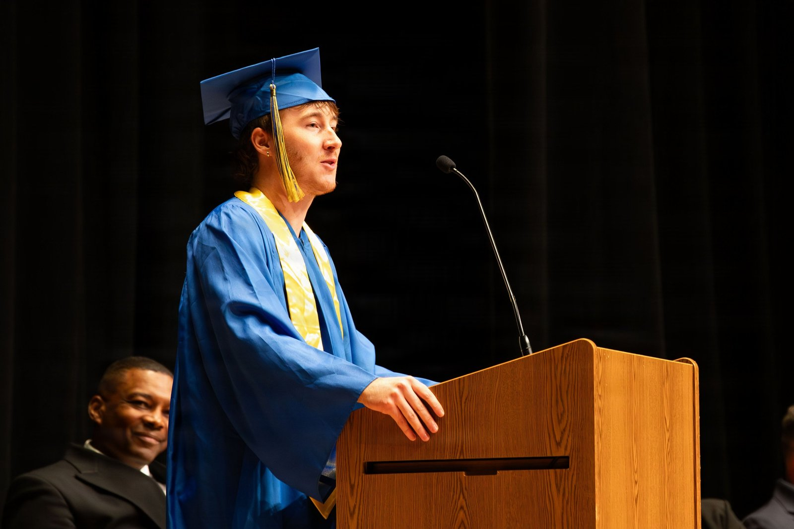

[250년 미국이야기④] 천조국 패권의 일곱 기둥과 흔들리는 만드는 힘
국방부 요청액 1조4500억달러, 2026 회계연도 확정액보다 44% 많은 이천조국 예산
두 배 가까운 조선 예산에도 늘지 않은 함정, 곳간에서 밀리고 거래에서 버티는 달러
붕괴가 아닌 침식, 기둥보다 바탕인 만드는 힘의 문제
AI경제저널=김갑봉 기자 | 한국에서는 미국을 흔히 천조국이라 부른다. 본디 조선이 명나라를 가리키던 천조국(天朝國)이 2000년대 초 미국을 수식하는 말로 옮겨 왔다. 지금은 국방비가 1000조원을 넘는 나라라는 천조국(千兆國)으로 더 많이 쓰인다.
천조국이라 부르던 시절은 지났다. 트럼프 행정부가 2026년 4월 내놓은 2027 회계연도 예산안은 국방에 1조5000억달러(약 2225조원)를 요청했다. 요청액으로 따지면 이천조국이다. 이 연재는 외화를 2026년 상반기 수준인 1달러 1483원으로 환산한다.
미 의회조사국이 9월 3일 고쳐 낸 보고서를 보면 국방부 한 부처만 떼도 1조4500억달러(약 2150조원)를 요청했다. 재량지출 1조1000억달러(약 1631조원)와 의무지출 3500억달러(약 519조원)를 합친 값이다.
2026 회계연도 확정액 1조100억달러(약 1498조원)보다 4409억달러(약 654조원), 곧 44% 많다. 다만 의무지출 3500억달러는 의회가 예산조정 입법으로 따로 마련해 주리라 가정한 금액이다. 11월 초에도 국방 예산조정 법안은 처리되지 않아 중간선거 뒤 회기 과제로 남았다.
돈을 더 쓰면 힘도 그만큼 커지는가. 1776년 태어난 나라가 250년을 맞은 2026년, 필자는 그 물음에서 시작한다.
2차 세계대전 뒤 80년 넘게 이어온 패권은 군사력과 달러, 동맹, 국제제도, 기술, 에너지와 지리, 그리고 소프트파워라는 일곱 기둥 위에 서 있다. 필자는 그 일곱 기둥을 하나씩 두드려 본다. 소리가 예전 같지 않다. 다 두드리고 나면 기둥이 아니라 기둥을 세운 바탕, 곧 만드는 힘의 문제가 남는다고 필자는 본다.
군사력, 최강이되 만들지 못하는 나라
스톡홀름국제평화연구소가 2026년 4월 27일 낸 자료를 보면 미국은 2025년 군사비로 9540억달러(약 1415조원)를 썼다. 세계 전체 2조8870억달러(약 4281조원)의 3분의 1이다.
핵전력과 항공모함 전단, 세계에 펼친 기지망이 지구 전체에 힘을 뻗는 능력을 받쳐 왔다. 그런데 물가를 뺀 실질 기준으로 미국 군사비는 2025년 한 해에 7.5% 줄었다. 이 연구소는 그해 우크라이나 군사원조가 새로 승인되지 않은 것을 주된 이유로 꼽았다. 연구소는 2022년부터 2025년까지 우크라이나 지원 명목으로 국방부에 배정된 추가 예산을 모두 1270억달러(약 188조원)로 집계했다.
같은 해 미국을 뺀 나머지 세계의 군사비는 9.2% 늘었다. 세계 군사비는 11년 연속 늘었고, 국내총생산 대비 비중은 2.5%로 2009년 이후 가장 높다.
추격의 속도도 다르다. 중국 군사비는 31년 연속으로 늘어 2025년 3360억달러(약 498조원)가 됐다. 한 해 증가율은 7.4%이고, 미국 군사비는 중국의 2.8배다.
필자는 미국이 줄인 한 해를 추세 전환이라기보다 일시 감소로 본다. 같은 국방부 예산끼리 견주면 2027 회계연도 요청액이 2026 회계연도 확정액보다 44% 많다. 요청대로라면 미국은 다시 늘리는 길을 가려 하지만, 의회가 허락할지는 아직 알 수 없다.
11월 초 현재 의회는 2027 회계연도 국방수권법을 처리하지 못했다. 하원은 7월 22일 216대212로 법안을 통과시켰다. 상원은 7월 14일 자체 법안 심의를 시작하려던 토론종결 표결이 50대46으로 무산된 뒤 본회의 처리를 하지 못했다.
국방 세출법도 의회를 통과하지 못했다. 11월 3일 기준 하원은 2027 회계연도 세출법 12개 가운데 3개를 통과시켰고, 상원은 하나도 통과시키지 못했다. 하원이 통과시킨 3개에 국방 세출법은 들지 않았다.
하원은 9월 1일 상원 수정안에 370대48로 동의해 12월 11일까지 지난해 수준으로 정부를 운영하는 임시예산을 확정했다. 트럼프 대통령은 이튿날 서명했다. 미 의회조사국 정리를 보면 이 임시예산은 국방부의 신규 사업 착수와 2026 회계연도 수준을 넘는 생산량 증대를 막는다. 임시예산은 11월 초에도 유효해, 증액은 적어도 12월 11일까지 발이 묶였다.
요구는 전쟁보다 먼저였다. 트럼프 대통령은 2026년 1월 7일 이미 2027년 국방비 1조5000억달러를 요구했다. 2월 28일 미국은 이스라엘과 함께 이란을 쳤다. 미 의회조사국은 3월 중동 일대에 배치된 미군을 약 5만명으로 추산했다.
4월 휴전과 6월 양해각서가 있었지만 양해각서는 6월 말 미군의 타격으로 흔들려 8월에 공식 만료됐다. 4월 13일 시작해 6월 18일 풀렸던 해상봉쇄는 7월 14일 재개됐고, 9월에도 교전이 이어졌다. 군사비를 줄인 한 해와 예산을 44% 늘려 달라고 요청한 한 해 사이에 이 전쟁이 있다.
10월에도 충돌은 이어졌다. 10월 9일 이란 혁명수비대가 액화석유가스 유조선을 공격했다고 밝혔고, 10월 10일에는 미군이 봉쇄 속에서 이란 항구를 떠난 상선을 무력화했다.
11월 초에도 합의는 없다. 11월 6일 밤 이란 케슘섬에 발사체 두 발이 떨어졌고, 트럼프 대통령은 미국이 '소규모 타격'을 했다고 인정했다. 미 중부사령부는 11월 7일 해상봉쇄를 넓히는 새 기동부대를 띄웠고, 미군은 같은 날 오만만에서 상선 한 척을 무력화했다.
아락치 이란 외무장관은 11월 8일 미국 중간선거 뒤 중재자들의 발길이 끊겼다고 말했다. 루비오 국무장관은 같은 날 돌파구가 눈앞에 있다고 보지 않는다고 했다. 이란 호르모즈간주 부지사는 11월 9일 아침 케슘섬이 밤사이 다시 표적이 됐다고 밝혔고, 미국은 이 공격을 직접 확인하지 않았다. 트럼프 대통령은 11월 9일(미국시각) 백악관에서 중재에 나선 카타르 총리를 만났지만, 합의 소식은 나오지 않았다.
필자는 지출 밑의 구조를 더 큰 문제로 본다. 미 회계감사원 분석을 보면 미 해군은 20년 동안 조선 예산을 두 배 가까이 늘리고도 함정 수를 늘리지 못했다. 2024년 9월 건조 중이던 함정 가운데 일부는 최대 3년 늦어질 것으로 추산됐다. 일부 민간 조선소는 공간이 모자라고 숙련 인력을 구하고 붙잡아 두기 어렵다.
미 의회조사국의 해군 전문가 로널드 오루크는 2025년 3월 11일 하원 군사위원회 소위원회에서 증언했다. 2024년 드러난 건조 일정 지연 전망을 2차대전 뒤 해군사에서 이례적인 수준이라고 했다. 인력 문제는 지연과 생산능력 제약의 핵심 요인으로 꼽았다.

이 연재 36편에서 다루듯 전투력 함정 수는 이미 중국에 역전됐다. 미 의회조사국은 중국 해군이 2015년에서 2020년 사이 어느 시점에 전투력 함정 수에서 미 해군을 앞질렀다고 적었다. 필자는 조선 예산을 두 배 가까이 늘리고도 함정이 늘지 않은 데서 돈이 곧 힘으로 바뀌지 않는 경우를 본다. 이 기둥의 문제는 힘의 크기가 아니라 힘을 만들어내는 바탕이라고 필자는 진단한다.
달러, 느리게 내려오는 기축통화
달러는 여전히 기축통화다. 국제통화기금 통계를 보면 각국 외환보유액에서 달러가 차지하는 몫은 1999년 71%에서 2025년 4분기 56.52%까지 내려왔다.
2026년 1분기에는 57.18%로 조금 올랐다가 2분기에 56.70%로 다시 내렸다. 국제통화기금은 7월 데이터브리프에서 1분기에 오른 폭의 절반가량이 환율 변동에 따른 평가효과라고 밝혔다.
그런데 같은 달러가 거래에서는 자리를 지켰다. 국제결제은행 3년 주기 조사 확정치를 보면 2025년 4월 세계 외환거래는 하루 9조5102억달러(약 1경4104조원)로 3년 전보다 27% 늘었다. 그 가운데 89.1%가 한쪽에 달러를 끼고 있었다. 유로는 28.5%, 엔은 16.9%였다.
두 숫자가 엇갈린다. 곳간의 달러는 1999년 뒤 줄었는데 거래의 달러는 2022년 뒤 3년 사이 줄지 않았다.
이규철은 2021년 논문에서 세계의 달러 자금 거래가 미국 안에서 최종 결제되므로 미국이 결제망 접근을 볼모로 규범을 강제할 수 있다고 분석했다. 그는 중국의 대응전략이 자본유출을 부르는 동시에 자본계정 개방을 요구한다는 한계를 안고 있다고 봤다.
필자는 쌓아두기는 선택에 가깝고 거쳐 가기는 관성에 가깝다고 본다. 다만 둘은 끝내 떨어져 있지 않다. 고피나스와 스타인은 2021년 논문에서 무역 대금을 매기는 역할과 안전자산으로 쥐는 역할이 서로를 키운다고 분석했다. 그래서 기초여건이 비슷한 큰 후보국이 여럿이어도 하나의 지배 통화가 나타날 수 있다고 봤다.
두 역할이 서로를 붙드니 곳간의 몫이 더 줄면 그 붙들림이 약해져 거래의 몫도 따라 내려올 수 있다는 것이 필자의 해석이다. 필자는 달러 패권이 급하게 무너지지 않는 까닭도 이 붙들림에서 찾는다. 이 연재 31편이 이 기둥을 자세히 다룬다.
동맹, 두터워지되 제 길을 찾는 유럽
동맹이라는 셋째 기둥은 숫자만 보면 가장 두터워 보인다. 스톡홀름국제평화연구소 집계로 유럽 나토 29개국의 2025년 군사비는 5590억달러(약 829조원)이고, 그 가운데 22개국이 국내총생산의 2% 이상을 썼다.
유럽 전체 군사비는 한 해에 14% 늘어 8640억달러(약 1281조원)가 됐다. 유럽 나토 회원국 군사비 증가율은 1953년 이후 가장 빨랐다. 독일은 24% 늘어 1140억달러(약 169조원)를 썼고, 국내총생산 대비 비중이 1990년 이후 처음으로 2%를 넘었다.
회원국들은 2025년 6월 25일 헤이그 정상선언에서 2035년까지 국내총생산의 5%를 쓰기로 목표를 올렸다. 핵심 국방에 3.5% 이상, 기반시설 방호·민방위·방위산업 기반에 최대 1.5%를 배정하는 구성이다. 핵심 국방만으로도 종전 기준 2%를 크게 넘는다.
그러나 속을 보면 결이 다르다. 필자는 유럽의 증액에 미국의 압박과 미국만 믿을 수 없다는 계산이 함께 있다고 본다. 독일 연방정부는 2023년 6월 14일 처음 낸 국가안보전략에서 유럽연합이 지정학적으로 움직이며 제 안보와 주권을 지킬 수 있게 하겠다고 적었다.
필자는 트럼프 2기 들어 유럽연합 집행위원회가 2025년 3월 4일 내놓은 재무장 계획을 그 채비의 다음 걸음으로 본다. 이 연재 51편이 이를 다룬다.
국제제도, 규칙 제정자 곁의 경쟁자들
미국은 유엔과 국제통화기금, 세계은행의 설립을 주도한 나라이고, 규칙을 만드는 힘은 패권의 핵심 수단이었다. 지금 그 곁에 다른 규칙들이 자란다.
중국이 주도한 아시아인프라투자은행은 2016년 창립 회원 57개국으로 문을 열었다. 이 은행은 2025년 기준 회원이 111개를 넘어 여섯 대륙에 걸친다고 밝힌다.
중국을 포함해 일대일로에 참여하는 나라는 150개 안팎이다. 푸단대 녹색금융개발센터 조사를 보면 이탈리아가 2023년 12월, 파나마가 2025년 2월 빠졌다. 서명 여부가 불확실한 나라도 있어 이 조사는 참여국을 146개에서 150개 사이로 본다.
필자는 규칙을 만드는 곳이 하나이던 시대가 지나가고 있다고 본다. 다만 회원 수가 늘었다고 미국 제도를 대체했다고까지 보지는 않는다.
기술, 분야별로 갈라지는 우위
기술 패권은 이제 분야별로 갈린다. 스탠퍼드대 인간중심인공지능연구소 집계로 인공지능에서조차 미국 최고 모델이 중국 최고 모델을 앞서는 폭은 2026년 3월 성능 평가 점수로 2.7%까지 좁혀졌다. 이 연재 45편이 이를 다룬다.
전기의 시대를 떠받칠 물건 쪽은 이미 기울었다. 국제에너지기구 세계 전기차 전망 2026을 보면 2025년 전기차 생산의 70%, 배터리 셀은 80% 넘게 중국에서 나왔다. 배터리 속을 채우는 재료로 내려가면 격차가 더 벌어진다. 양극활물질은 세계 생산의 85%가량, 음극활물질은 90% 이상이 중국 몫이다.
같은 기구는 각국이 발표한 정책을 반영한 시나리오에서 2035년에도 중국이 음극활물질 90% 가까이, 배터리 3분의 2를 차지하리라 내다봤다. 10년을 들여 분산해도 그 정도다.
필자는 미국이 모든 분야를 다 이기던 시대에서 분야를 골라 이기는 시대로 넘어가는 중이라고 본다. 골라 잡지 못한 분야가 하필 다음 시대의 바탕에 해당한다는 것이 필자의 판단이다.
에너지와 지리, 가장 오래 버틸 기둥의 시한
두 대양 사이의 지리는 변하지 않는 자산이고, 셰일혁명이 그 자산에 연료를 얹었다. 미 에너지정보청 자료를 보면 미국은 2018년 러시아를 제친 뒤 세계 최대 산유국 자리를 지키고 있다. 2025년 원유생산은 하루 1360만배럴로 사상 최고였고, 그다음 두 산유국인 러시아와 사우디보다 평균 40%가량 많았다.
액화천연가스도 마찬가지다. 2016년 하루 5억입방피트이던 수출이 2025년(1~11월 평균) 하루 150억입방피트가 됐고, 지금은 호주와 카타르를 앞선 세계 1위다.
에너지는 지금 미국이 가장 앞선 기둥 가운데 하나이고, 동맹을 묶는 줄이기도 하다. 미국 액화천연가스 수출에서 유럽이 가져가는 몫은 우크라이나 전쟁을 거치며 2021년 약 3분의 1에서 2022년 69%로 뛰었고 2025년 1~11월에도 68%였다.
다만 이 기둥에는 시한이 있다. 석유의 시대가 전기의 시대로 넘어가는 길목인데, 앞서 본 대로 전기의 시대를 돌릴 공급망은 중국이 쥐었다. 필자는 땅에서 나는 것은 미국이, 공장에서 나오는 것은 중국이 쥐었다고 본다.
필자는 에너지가 바뀌는 길목에서 만드는 힘을 가진 쪽이 다음을 가져간다고 본다. 이렇게 읽으면 지금의 자립이 다음 시대의 우위를 보장하지 않는다. 이 연재 44편이 이 갈림길을 다룬다.
소프트파워, 새로 오는 사람부터 줄어드는 흐름
미국의 대학은 여전히 세계의 인재를 끈다. 국제교육연구소 오픈도어스 2025를 보면 2024~2025학년도 미국 대학의 유학생은 117만7766명으로 한 해 5% 늘었다. 미국 고등교육 인구의 6%이고, 2024년 미국 경제에 550억달러 가까이(약 82조원)를 보탰다.
그런데 총원 밑의 흐름은 반대로 돈다. 같은 조사에서 그해 처음 입학한 신입 유학생은 7%, 신입 대학원생은 15% 줄었다. 825곳 넘는 대학이 참여한 2025년 가을 조사에서는 전체가 1%, 대학원이 12%, 신입이 17% 줄었다.
스탠퍼드대 인간중심인공지능연구소 집계로 미국으로 옮겨 오는 인공지능 연구자와 개발자는 2017년보다 89% 줄었고, 최근 한 해에만 80% 줄었다. 이 연구소는 미국이 새 인재를 끌어들이는 속도가 10여년 만에 가장 느리다고 적었다. 다만 미국이 여전히 어느 나라보다 인공지능 인재를 많이 품고 있다고도 덧붙였다.
필자는 매력은 남았으되 새로 오려는 사람의 흐름부터 꺾인다고 본다. 이 연재 45편이 이 흐름을 자세히 다룬다.
기둥이 아니라 바탕
일곱 기둥을 두드린 소리를 모으면 하나의 진단이 나온다. 필자가 보기에 무너진 기둥은 없지만 온전한 기둥도 없다.
미 의회예산처는 2026년 2월 11일 공공이 보유한 연방부채가 2026년 국내총생산의 101%에서 2036년 120%에 이른다고 내다봤다. 1946년의 종전 최고치 106%를 넘는 값이다.
같은 전망에서 2026년 재정적자는 1조9000억달러(약 2818조원)로 국내총생산의 5.8%인데, 지난 50년 평균은 3.8%였다.
필자는 제국이 밖에서 무너지기 전에 안에서 먼저 빈다고 본다. 국방부 요청액을 44% 늘리겠다는 해에 일부 조선소는 인력을 붙잡지 못하고 재정은 빚으로 버틴다는 사실이 그 해석에 무게를 싣는다.
기둥들이 서로 기대어 있다는 점이 진단을 무겁게 한다. 필자는 동맹이 멀어지면 달러 수요가 줄고, 인재가 빠져나가면 기술 우위가 좁아진다고 본다.
아이컨그린과 멜, 치투는 2019년 논문에서 1차대전 이전 19개국의 외환보유액을 분석해 군사동맹이 상대국 보유액 중 해당 통화의 몫을 30%포인트 높인다고 추정했다. 미국이 국제무대에서 물러나 보유액 구성만 바뀌는 가상 시나리오에서는 미국 장기금리가 최대 0.8%포인트 오를 수 있다고 봤다.
반대로 기둥 하나가 온전히 무너진 적도 없고 대부분 여전히 1위다. 필자의 진단이 붕괴론이 아니라 침식론인 까닭이다.
필자가 일곱 기둥에서 읽은 미국은 절대 단극이 아니라 상대적 1위다. 순(純) 자원으로 재면 미국의 우위가 흔히 생각하는 것보다 크다는 반론도 있다. 마이클 베클리는 2018년 논문에서 그렇게 분석했다.
군사비는 명목 달러로 중국의 2.8배이지만 중국은 31년째 늘고 있고, 달러는 곳간에서 밀리며 거래에서 버티고, 미국 곁에 다른 규칙이 자랐다. 군사력과 달러, 에너지에서 미국은 여전히 1위이지만, 필자는 어느 항목에서도 독주하지는 못한다고 본다.
패권을 지킬 수 있을까라는 물음에 필자의 답은 이렇다. 지킬 수도 있지만, 그러려면 기둥을 세운 바탕, 곧 만드는 힘을 되찾아야 한다고 필자는 본다.
그것이 얼마나 어려운 일인지를 다음 세 편이 보여준다. 이 연재 5편의 팽창이 남긴 그림자, 6편의 사라진 일자리 700만개, 7편의 반세기 무역적자가 그 바탕의 실상이다.
요청액으로 따지면 별명의 자릿수는 천조에서 이천조로 올라가려 한다. 그런데 별명의 자릿수가 오르는 동안 기둥들의 소리는 반대로 갔다. 배는 중국이 더 많이 갖고, 유럽은 제 힘을 따로 키우려 한다.
돈을 더 쓰면 힘도 그만큼 커지느냐는 물음에 필자의 답은 아니라는 쪽이다. 돈만으로는 만드는 힘이 따라오지 않는다고 필자는 본다.
(이 연재는 단행본으로 준비 중인 『250년 미국이야기』 원고를 AI경제저널에 맞게 고쳐 싣는다.)
참고문헌
- 마이클 베클리(Michael Beckley), "The Power of Nations: Measuring What Matters", 『International Security』 43권 2호, 7~44쪽, 2018년. DOI 10.1162/isec_a_00328. https://doi.org/10.1162/isec_a_00328
- 배리 아이컨그린(Barry Eichengreen)·아르노 멜(Arnaud Mehl)·리비아 치투(Livia Chiţu), "Mars or Mercury? The geopolitics of international currency choice", 『Economic Policy』 34권 98호, 315~363쪽, 2019년 4월. DOI 10.1093/epolic/eiz005. https://doi.org/10.1093/epolic/eiz005
- 기타 고피나스(Gita Gopinath)·제러미 스타인(Jeremy C. Stein), "Banking, Trade, and the Making of a Dominant Currency", 『The Quarterly Journal of Economics』 136권 2호, 783~830쪽, 2021년. DOI 10.1093/qje/qjaa036. https://doi.org/10.1093/qje/qjaa036
- 이규철, 「미국 달러 패권의 메커니즘과 중국의 대응전략」, 『한국동북아논총』 26권 4호(통권 101호), 55~80쪽, 2021년. DOI 10.21807/JNAS.2021.12.101.055. https://www.kci.go.kr/kciportal/ci/sereArticleSearch/ciSereArtiView.kci?sereArticleSearchBean.artiId=ART002789308
- 샤오량(Xiao Liang) 외, "Trends in World Military Expenditure, 2025", 『SIPRI Fact Sheet』, 스톡홀름국제평화연구소, 2026년 4월. DOI 10.55163/ZLHQ1057. https://www.sipri.org/publications/2026/sipri-fact-sheets/trends-world-military-expenditure-2025 · 같은 연구소 보도자료 "Global military spending rise continues as European and Asian expenditures surge", 2026년 4월 27일. https://www.sipri.org/media/press-release/2026/global-military-spending-rise-continues-european-and-asian-expenditures-surge
- 스탠퍼드대 인간중심인공지능연구소(Stanford HAI), 『Artificial Intelligence Index Report 2026』 제1장·제2장, 2026년 4월. https://hai.stanford.edu/assets/files/ai_index_report_2026_chapter_1_research_development.pdf · https://hai.stanford.edu/assets/files/ai_index_report_2026_chapter_2_technical.pdf
- 백악관 관리예산처(OMB), 『Budget of the U.S. Government, Fiscal Year 2027』, 2026년 4월. https://www.whitehouse.gov/wp-content/uploads/2026/04/budget_fy2027.pdf
- 미 의회조사국(CRS), "FY2027 Defense Budget: Funding for Selected Weapon Systems", R49023, 2026년 9월 3일 개정판 · "Overview of Continuing Appropriations for FY2027 (Division A of P.L. 119-103)", R49353, 2026년 9월 17일. https://www.everycrsreport.com/reports/R49023.html · https://www.everycrsreport.com/reports/R49353.html
- 미 의회조사국(CRS), "U.S. Conflict with Iran", R48887, 2026년 3월 26일판·9월 18일판. https://www.everycrsreport.com/reports/R48887.html
- 미 의회조사국(CRS) 로널드 오루크(Ronald O'Rourke), 「The State of U.S. Shipbuilding」 하원 군사위원회 해양력·전력투사소위원회 증언, TE10110, 2025년 3월 11일 · 「China Naval Modernization: Implications for U.S. Navy Capabilities」, RL33153, 2025년 4월 24일판. https://armedservices.house.gov/uploadedfiles/03.11.25_spf_state_of_shipbuilding_orourke_statement.pdf · https://www.everycrsreport.com/reports/RL33153.html
- 미 회계감사원(GAO), "U.S. Navy Shipbuilding Is Consistently Over Budget and Delayed Despite Billions Invested in Industry", 2025년 4월 8일. https://www.gao.gov/blog/u.s.-navy-shipbuilding-consistently-over-budget-and-delayed-despite-billions-invested-industry
- 미 의회예산처(CBO), "The Budget and Economic Outlook: 2026 to 2036", 2026년 2월 11일. https://www.cbo.gov/publication/61882
- 국제통화기금(IMF), 「Currency Composition of Official Foreign Exchange Reserves(COFER)」, 2026년 2분기 포함 판. https://api.imf.org/external/sdmx/2.1/data/COFER/G001.AFXRA.CI_USD.SHRO_PT.Q?startPeriod=1999 · "IMF Data Brief: Currency Composition of Official Foreign Exchange Reserves", 2026년 7월 1일. https://data.imf.org/en/news/imf%20data%20brief%20july%201
- 국제결제은행(BIS), 「2025 Triennial Central Bank Survey Detailed tables: OTC foreign exchange market turnover in April 2025」. https://www.bis.org/publications/commentary-otc-derivatives/statistics-rpfx25-fx-annex.pdf · 「Global FX markets when hedging takes centre stage」, 『BIS Quarterly Review』, 2025년 12월. https://www.bis.org/publ/qtrpdf/r_qt2512b.htm
- 국제에너지기구(IEA), "Manufacturing and trade", 『Global EV Outlook 2026』, 2026년 5월. https://www.iea.org/reports/global-ev-outlook-2026/manufacturing-and-trade
- 국제교육연구소(IIE), 『Open Doors 2025』 발표 보도자료, 2025년 11월 17일. https://www.iie.org/news/open-doors-2025-press-release/
- 마이클 로웰(Michael Lowell) 외, "Congress returns: National security and trade provisions to watch in the FY2027 NDAA", 리드스미스(Reed Smith), 2026년 11월 2일. https://www.tradecomplianceresourcehub.com/2026/11/02/congress-returns-national-security-and-trade-provisions-to-watch-in-the-fy2027-ndaa/ · 홀랜드앤드나이트(Holland & Knight), "Beyond the Midterms: Congress Faces Converging Year-End Deadlines", 2026년 10월 9일. https://www.hklaw.com/en/insights/publications/2026/10/beyond-the-midterms-congress-faces-converging-year-end-deadlines · 책임있는연방예산위원회(CRFB), "Lame Duck Session Shouldn't Be an Excuse to Borrow More", 2026년 11월 3일. https://www.crfb.org/blogs/lame-duck-session-shouldnt-be-excuse-borrow-more
- 더 피스컬 타임스(The Fiscal Times), "Trump Calls for Huge Boost in 2027 Defense Budget to $1.5 Trillion", 2026년 1월 7일. https://www.thefiscaltimes.com/2026/01/07/Trump-Calls-Huge-Boost-2027-Defense-Budget-15-Trillion
- CBS News, 이란 전쟁 실시간 갱신, 2026년 10월 11일·11월 8일. https://www.cbsnews.com/live-updates/iran-war-trump-us-elections-saudi-arabia-yemen-houthis/ · https://www.cbsnews.com/live-updates/iran-war-trump-us-strait-hormuz-persian-gulf/ · 알자지라(Al Jazeera), "Qeshm island and Hormuz hit, as mediators try to prevent US-Iran escalation", 2026년 11월 7일 · "Iran stands by demands to end the war as US ramps up military pressure", 2026년 11월 9일. https://www.aljazeera.com/news/2026/11/7/qeshm-island-and-hormuz-hit-as-mediators-try-to-prevent-us-iran-escalation · https://www.aljazeera.com/news/2026/11/9/iran-stands-by-demands-to-end-the-war-as-us-ramps-up-military-pressure · 폭스뉴스(Fox News), "Trump meets Qatar's PM as Rubio warns Iran talks not close to deal", 2026년 11월 9일. https://www.foxnews.com/world/trump-meets-key-iran-war-mediator-uae-reveals-major-oil-export-surge-despite-conflict
- 서욱진, 「[천자칼럼] 국방 천조국 美」, 한국경제, 2025년 12월 21일. https://www.hankyung.com/article/2025122169011
[사진 출처]
- [사진1] 미 해군(U.S. Navy), 「The USS Dwight D. Eisenhower and USS Gerald R. Ford carrier strike groups in November 2023」, 2023년 11월 3일(위키미디어 공용 파일 기재일, 원출처 아이젠하워함 공식 계정 게시물), 미 연방정부 저작물 공공영역(PD-USGov). 위키미디어 공용 게재본(원본과 파일 해시 일치). https://commons.wikimedia.org/wiki/File:The_USS_Dwight_D._Eisenhower_and_USS_USS_Gerald_R._Ford_carrier_strike_groups_in_November_2023.jpg
- [사진2] 셸비 웨스트(Shelby West), 미 해군 노퍽 해군조선소, 「A Legacy of Craftsmanship: Norfolk Naval Shipyard Celebrates Newest Journeymen During the 2025 Apprentice Graduation」, 2025년 12월 17일 촬영, 국방영상정보배포서비스(DVIDS) 사진번호 9454079(VIRIN 251217-N-YO710-9266), 공공영역. https://www.dvidshub.net/image/9454079/legacy-craftsmanship-norfolk-naval-shipyard-celebrates-newest-journeymen-during-2025-apprentice-graduation · 수료생 88명·21개 직종은 크리스티 브릿(Kristi R. Britt)의 같은 제목 기사, 2025년 12월 19일. https://www.dvidshub.net/news/554948/legacy-craftsmanship-norfolk-naval-shipyard-celebrates-newest-journeymen-during-2025-apprentice-graduation
관련기사
- [250년 미국이야기①] 역사의 저울로 미국 250년을 잰다
- [250년 미국이야기②] 석유로 선 미국 250년, 다섯 축이 한자리에서 꺾인다
- [250년 미국이야기③] 미국 유럽 러시아 중국의 250년, 세계 생산의 저울은 두 번 기울었다
저작권자 © AI경제저널 무단전재 및 재배포, AI학습 및 활용 금지